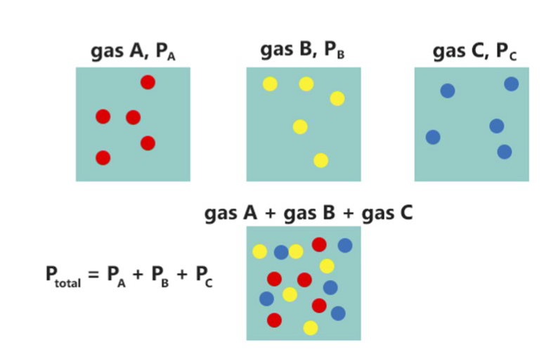
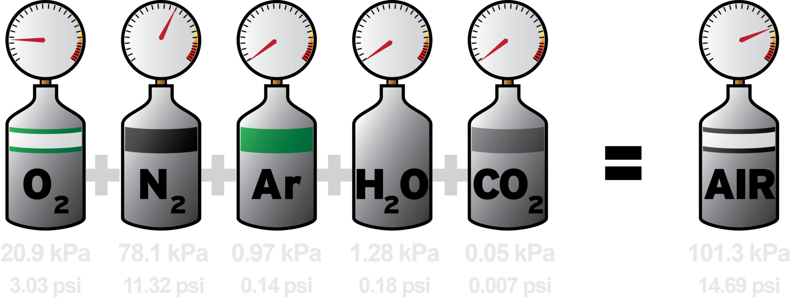
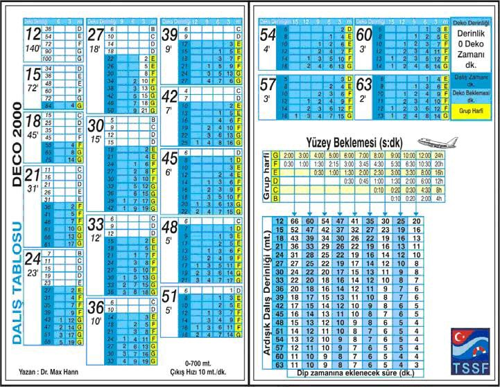

Uzman Dalıcı Kursu
ÖNEMLİ Nitrox hiçbir zaman daha derine dalmak için kullanılmaz!
Nitrojen (azot) ile oksijen gazlarının karışımından oluşan, solunabilir gaz karışımıdır.
Soluduğumuz hava yaklaşık olarak 20.8% O2 ve 78.1% N2'den oluşmaktadır. Bu karışım da nitrox olarak isimlendirilebilir. Ancak "Zenginleştirilmiş Hava Nitrox'u" dendiğinde bu oksijenin yüzdesinin 21%'in üzerinde olduğunu ifade eder.
Bu oran sportif dalış limitleri içerisinde 22-40% arasındadır.
Boyle Mariotte Kanunu
P1 x V1 = P2 x V2
Dalton Kanunu
 Henry kanunu
PO2 = FO2 x P
Gazların sıvı içerisindeki çözünürlüğünün artan gaz basıncı ile doğru orantılı olarak arttığını söyler. Yani soluduğumuz havadaki oksijen kısmi basıncı ile vücut sıvılarımızdaki miktar aynı olacaktır.
MOD (max operation depth):
P = PO2 / FO2
Best Mixture:
FO2 = PO2 / P
Oxygen Dose:
PO2 = P x FO2
DECO2000Bunun için EAD (Equivalent Air Depth / Eşdeğer Hava Derinliği) hesabı yapılmalıdır.
NOAA Nitrox Tables
ÖNEMLİ Oksijen yakıcı bir gazdır. O yüzden oxygen clean olmayan hiçbir ekipman ile kullanılmamalıdır!
Nasıl yapıldığına ve nereden doldurulduğuna bakılmaksızın, zenginleştirilmiş hava ile dalmadan önce ilk yapılacak iş karışımı belirlemektir. Bu sayede tabloları düzgün kullanabilir ve dipte kalacağımız maksimum zamanla oksijen miktarını hesaplayabiliriz.
Analizör her açıldığında kalibre edilmesi gerekebilir. Bunun için en kolay yol havayı kullanmaktır. En güvenli yol ise saf oksijen ile yapılan kalibrasyon işlemidir. Çoğu analiz aleti için dakikada akan hava miktarı 4 litreden fazla olmamalıdır. (Her zaman üretici talimatlarına uyun)
Analiz sonucu %1 den farklı olmamalıdır. Yüzdenin onda birlik kısmında aşağıya ya da yukarıya yuvarlama yapılabilir.
Analizör mümkün olduğu kadar kuru bir ortamda saklanmalıdır. Ayrıca hiçbir zaman sensörlerin içerisinde üflememelisiniz. Çünkü insan nefesinde de nem vardır.
Oksijen sensörünün ömrü 6 ay ile 1 yıl arasında değişmektedir. Bu süreden sonra yenisi ile değiştirilmelidir. Sensörlerin raf ömrü vardır ve periyodik olarak kontrol edilmelidirler.
Etiketleme işlemi vananın hemen altına yapılmalı ve aşağıdaki bilgileri içermelidir:
Nitox ile yapılan dalışlarda standart planlamaya ek olarak:
Oksijen zehirlenmesi, limit kısmi basınçları (1.6 ATA) geçildiğinde oluşabilir. Bu durum merkezi sinir sistemi (CNS) üzerinde oluşur. Belirtileri:
Oksijen zehirlenmesinin bir diğer türü de akciğer zehirlenmesidir. Uzun süreli olarak yüksek oksijen kısmi basıncına maruz kalmak, akciğerlerin zehirlenmesine sebebiyet verir. Belirtileri:
Akciğer zehirlenmelerinin, herhangi bir tıbbi yardıma gereksinim duymadan bir süre yüzeyde normal hava soluyarak tedavisi mümkündür. Bu tip rahatsızlıklardan sonra birkaç gün dalışlara ara verilmelidir.
Zenginleştirilmiş hava kullanıcısı dalış sırasında oksijen zehirlenmesi yüzünden herhangi bir problem yaşar ise bilinci yerinde olan bir dalıcı, hemen dalışını emniyetli bir şekilde sonlandırmalıdır. Kendini kaybetmiş dalıcı, regülatörü ağzından düşürmüş ise tekrar ağzına takmakla vakit kaybetmeden hızlı bir şekilde yüzeye çıkılmalı ve solunum kontrolü yapılmalıdır. Kazazedenin ve kendi yüzerliliğinizi pozitif hale getirdikten sonra yardım isteyin ve kazaedeyi güvenli bir alana taşıyın.